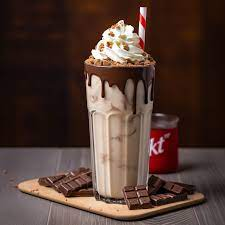
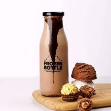
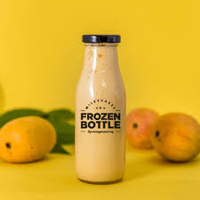
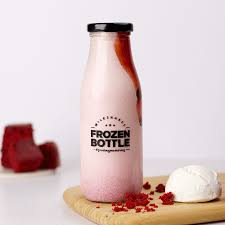
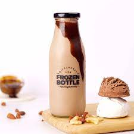

753 Ratings 258 Rs kit kat milkshake with ice- cream, combine the kit kat fingers,
vanilla ice-cream and milk in a mixer and blend till smooth.

Chicken Boneless Biryani
482 Ratings 339 Rs This Ferrero Rocher milkshake is a creamy shake
with the subtle flavours of hazelnut and chocolate.

Mango milkshake
167 Ratings 359 Rs Refreshing mango shake is the perfect drink when mangos are in their peak of the season.
Get two easy, delicious mango milkshake recipes.

Red Velvet milkshake
482 Ratings 339 Rs his red velvet milkshake calls for some basic ingredients
like milk, vanilla ice cream, whipped cream, and of course, some nice red velvet .

Nutty chocolate milkshake
167 Ratings 359 Rs Rich Belgian chocolate blended with loads of nuts,
chocolate and all things yummy and rich creamy Real Belgian Chocolate ice cream.

Butterscotch milkshake
482 Ratings 339 Rs This butterscotch milkshake
is a creamy shake made with vanilla ice cream and ribboned with sweet, rich butterscotch sauce.